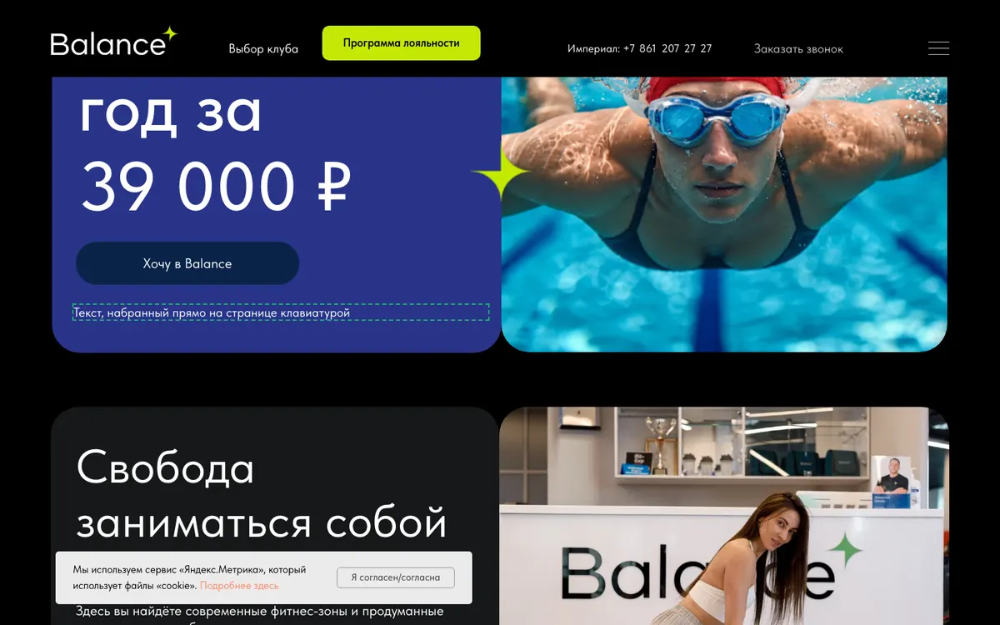
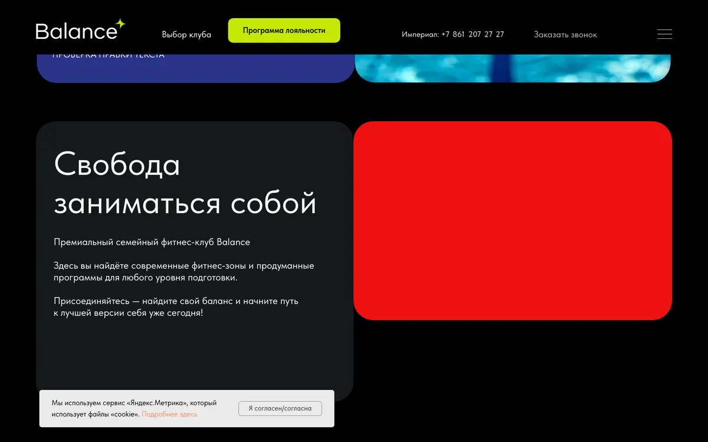
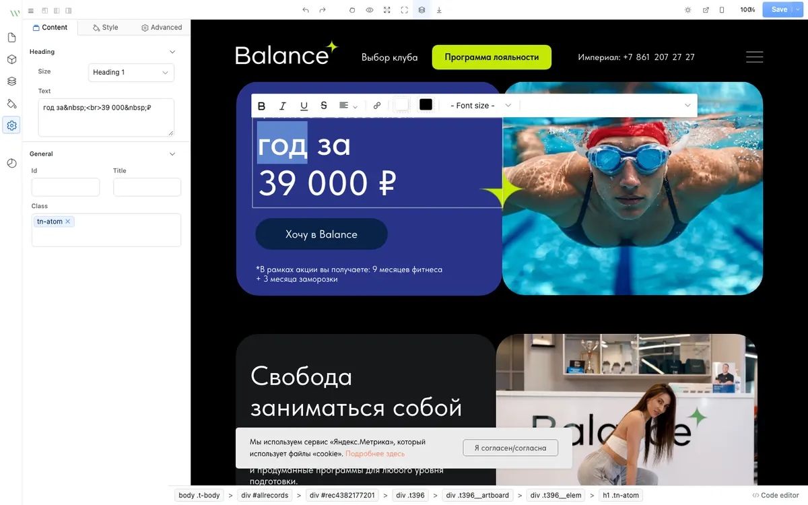
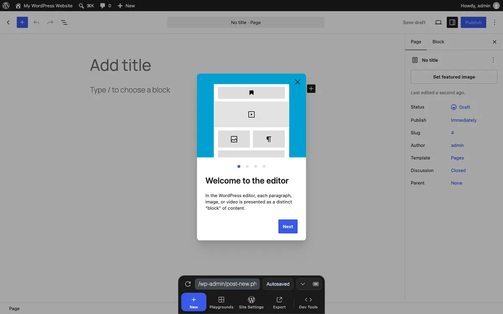

Правка сайта на странице, как в Тильде: что есть готового
Разбор на примере Balance, 6 ноября 2026. Код проекта не менялся.
Послушать итог голосом
Вывод
Готовые редакторы есть, но на Balance целиком не встал ни один из проверенных. Предлагаю свою лёгкую панель поверх сайта: опыт показал, что такая правка страницу не ломает.
Почему так: у Balance нет полей «заголовок» и «картинка». Каждая страница лежит цельным HTML Тильды, в среднем 826 КБ, плюс её рантайм. CMS хотят разложенный контент, а конструкторы пересобирают страницу целиком.
Два сильнейших кандидата, которые умеют брать готовый HTML, я запустил на странице «Империал». Правку оба открывают, а после сохранения страница у одного зависает, у другого становится вдвое выше. Точечная замена строки ничего не сдвинула.
Из чего выбираем
Рекомендую
А. Своя панель + точечная запись
Открываете страницу в кабинете, кликаете текст и пишете, кликаете картинку и загружаете новую, жмёте «Опубликовать».
Плюсы
Вид сайта не меняется. Кабинет, замок и запись в GitHub уже есть в наших проектах. Клиенту нечем сломать дизайн.
Минусы
Код наш, поддерживаем сами. Блоки не двигаются и не добавляются.
Берём готовый интерфейс редактора с панелями и отменой, а его сохранение заменяем точечным.
Плюсы
Интерфейс готов и выглядит солидно. Лицензия Apache 2.0.
Минусы
Интерфейс английский и для разработчика: шрифт, цвет, стили, код. Придётся вырезать лишнее и держать чужой код.
Срок
2 / 3,3 / 6 ч, оценка менее надёжная: код редактора я не дорабатывал
В. Настоящая CMS: TinaCMS или Apostrophe
Правка на странице из коробки, но 71 страницу надо пересобрать на компоненты с полями.
Плюсы
Полноценная CMS: новые страницы, блоки, роли.
Минусы
Теряем копию 1:1 и 180 вставок с их скриптами придётся переписывать. Нужен сервер.
Когда
Для новых сайтов с нуля, для Balance не окупается. Срок для Balance не считал.
Г. CloudCannon, платный сервис
Ближайший готовый сервис с правкой на странице, Astro поддерживает.
Плюсы
Не пишем редактор и не держим его.
Минусы
От 49–55 $ в месяц. Закрытый код, чужой хостинг. Элементы всё равно надо размечать. Оплату из России не проверял.
Статус
Не запускал, только документация и цены. Есть пробные 21 день.
WordPress с Elementor как вариант не ставлю: это другой движок, все страницы заново и уход от закреплённого у нас Astro.
Опыт на настоящей странице
Страница /imperial: 1,5 МБ, 133 скрипта. Сохранённый редактором результат открыл заново и замерил тем же кодом. Всё шло в памяти браузера, проект не менялся.
Что
Высота 1440 / 375, px
Всплывающее окно
Итог
Оригинал (контроль)
6035 / 6702
открылось
эталон
Точечная замена текста и картинки
6035 / 6702
открылось
совпало, правка встала
VvvebJs, сохранение как есть
не замерить
не проверить
страница зависла, 1,53 → 2,27 МБ
GrapesJS, со скриптами
11 707 / 13 096
открылось
вдвое выше оригинала
GrapesJS, настройки по умолчанию
не замерял
не проверял
из тела страницы убраны все 102 скрипта
Причина у VvvebJs, судя по сохранённому файлу: он записывает страницу уже после работы рантайма Тильды, вместе со всем, что тот дописал. При новом открытии получаем зависание, а на 375 px ещё и ошибку переполнения стека. Причину удвоения у GrapesJS не разбирал; страницу обратно собирал я сам, настройками это, возможно, лечится. Но сам подход лишний: он пересобирает 1,5 МБ ради одной строки.

Вариант А, опыт: текст набран прямо на странице, рантайм Тильды продолжает работать. Панели здесь ещё нет.

Вариант А, опыт: картинка заменена на красную заглушку, размер и скругление сохранились. То же на 375 px.

Вариант Б: VvvebJs открыл Balance без доработок. Правка текста работает, а шрифт, цвет и стили клиенту доступны тоже.

Настоящий редактор WordPress в Playground: отмена и повтор, список блоков, черновик, публикация, настройки справа.
Что берём у WordPress и Тильды
WordPress хранит страницу как HTML с метками блоков и настройками в комментариях, поэтому редактор знает, где какой блок. У нас такую роль сыграют номер блока и номер элемента Тильды: у 15 007 элементов Zero-блоков внутри своего блока нет ни одного повтора.
От Тильды: наводишь и кликаешь прямо на странице, отдельная кнопка «Опубликовать».
От WordPress: отмена и повтор, черновик до публикации, настройки выбранного элемента сбоку, просмотр телефонной версии.
Не берём: перетаскивание блоков, стили, шрифты, цвета. Вы просили текст и картинки, остальное только сломает вёрстку.
Кабинет Тильды для этого разбора я не открывал, её поведение описываю по вашей постановке.
Что будет в варианте А
Раздел кабинета «Редактор» за тем же логином: выбираете страницу из списка.
Клик по тексту: правите на месте. По желанию жирный и ссылка.
Клик по картинке: загрузка, сжатие, та же пропорция.
Просмотр на 1440 и 375 px и предупреждение, если текст вылез за блок.
Для шапки и подвала вопрос: «Этот блок на 56 страницах, менять везде?»
Отдельный список текстов из окон и меню: кликом их не достать, они скрыты.
«Опубликовать», статус сборки, история и откат.
Правки лежат отдельным файлом и накладываются при сборке. Правку, для которой элемент не нашёлся, сборка показывает как ошибку, а не теряет молча.
Ту же схему можно перенести на rozalii и alex-krown: они сделаны тем же переносом с Тильды, это видно по скриптам и страницам в JSON, но панель там не проверял. Обычным Astro-сайтам (Milovini, Elite Rose, Газ-маг, KitAccess) нужен другой способ привязки текста к исходнику, это отдельная работа.
Что нашлось на Balance и повлияет на работу
Живой сайт сейчас на Тильде. balance-fit.ru отвечает с Тильды, код лежит на копии GitHub Pages. Правки в панели на живой сайт не попадут, пока копию не выведем в бой. Сейчас это будет демонстрация.
Общие блоки. 73 блока из 894 стоят сразу на нескольких страницах, самые частые на 56. Номер +7 861 205 18 18 встречается в тексте 165 раз.
Скрытый текст. На «Империале» видно 119 текстовых элементов из 238, остальное в окнах и меню. Больше половины знаков (14,3 тыс. из 28 тыс.) лежит во всплывающих окнах.
Длинный текст. Текст втрое длиннее на телефоне вылез за блок на 121 px, сам блок не растёт. На 1440 px в том же месте запас хватил. Нужны предупреждение и просмотр.
Картинки лежат по-разному. На 71 странице 5148 тегов картинок, 372 фона и 184 ссылки внутри скриптов. Фоны надо делать отдельно, скрипты в первой версии не трогаем.
HTML-вставки. 969 блоков без видимого текста кликом не правятся. В 209 из них есть русский текст внутри скрипта, 43,5 тыс. знаков, часть из этого комментарии. Что там из цен и подписей, ещё надо разобрать.
У части обычных блоков нет готового адреса. Адрес поля есть в 1210 местах. Остальным стандартным блокам нужен путь внутри блока: это первая проверка при сборке.
Повторный перенос.npm run port переписывает файлы страниц, поэтому правки и лежат отдельно.
Публикация не мгновенная. Последние успешные сборки шли 1 мин 7 с и 3 мин 53 с. Мгновенно правка на сайте не появится.
Ключ GitHub. В Elite Rose ключ хранится в браузере. Нам это подходит, клиенту нет: если править будет он, нужна маленькая служба на сервере с логином.
Все просмотренные решения
Звёзды, лицензия и дата последнего коммита сняты через GitHub API 06.11.2026, если не указано иное.
Правка текста с форматированием, если нужны жирный и ссылки
Берём при необходимости
Как я это проверил
Утверждение
Как проверил
Итог
Подмена текста и картинки не ломает страницу
Подмена в HTML, рантайм Тильды, 1440 и 375 px, замер высоты и окна
Верно, на одной странице
Ошибка JS classList вызвана опытом
Контроль на нетронутой странице, плюс запись в docs/ТЕХДОЛГ.md
Неверно: она есть и в оригинале
У HTML-вставок 0 знаков видимого текста: ошибка разбора?
Посмотрел блоки и пересчитал кириллицу в их скриптах
Ноль настоящий, но в 209 есть текст в скриптах
GrapesJS теряет элементы: 400 против 3636
Сверил теги t396__elem: в исходнике тоже 400, остальное селекторы в CSS
Неверно: моя ошибка подсчёта, элементы на месте
Charles CMS подходит, как писал поиск
Прочитал README и package.json, код не запускал
Не подходит: версия Astro и вычисляемый контент
Живой сайт на Тильде
Запрос к balance-fit.ru: ответ 200, 43 строки со ссылками tildacdn
Верно
Не проверено. Опыты шли на одной странице из 71, в безголовом браузере и на настройках редакторов по умолчанию. Рабочей панели ещё нет, поэтому срок варианта А остаётся прогнозом. CloudCannon, Tina, Apostrophe, Directus, Payload и Sanity оценены по документации, Decap, Sveltia и Keystatic по обзорам. Загрузку настоящей картинки на сервер не делал, в опыте была заглушка.
Что нужно решить
Какой вариант? Рекомендую А.
Кто будет править: клиент или только мы? Если клиент, добавляется служба на сервере для записи: ключ GitHub ему отдавать нельзя. Если пока мы, хватит текущей схемы.
Форматирование нужно? По умолчанию беру только текст, жирный и ссылку.
Balance остаётся демонстрацией? Пока копия не в бою, правки живой сайт не меняют. Вывод в бой отдельным решением.